世界读书日，推荐读过的好书
昨天是第28个世界读书日，应个景，推荐一些我读过的好书，有些书我一读再读。
首先要推荐的是阳志平老师的新书《聪明的阅读者》，这是他的第一本个人专著。收到签名版书后，让人禁不住埋头沉浸其中。这本书详细讲述了如何科学地阅读，厚实的400多页，足以看出阳老师的用心和耐心。他将过去20多年的阅读心得都倾注在这本书中，如果您要阅读一本关于如何阅读的书，就选这一本，它是21世纪打开阅读大门的最佳途径。
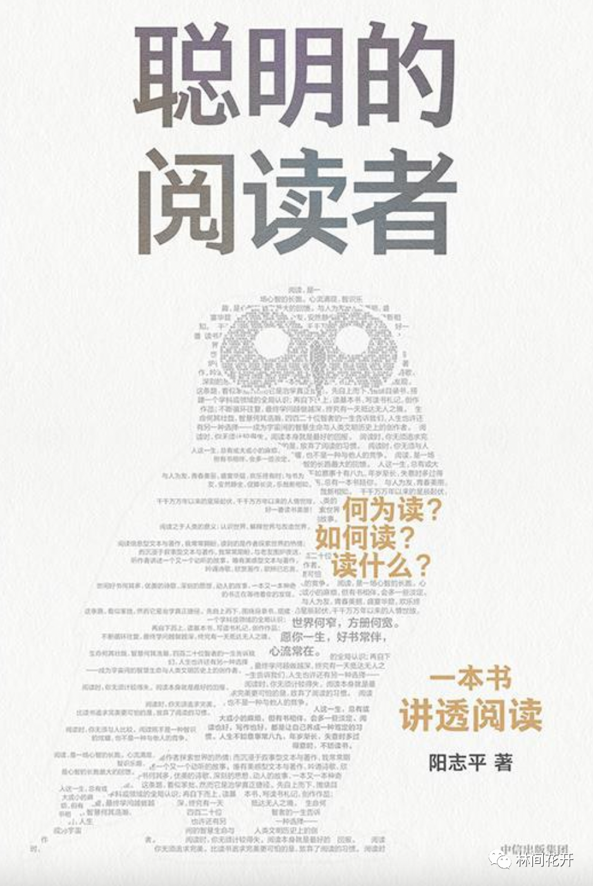
《聪明的阅读者》不仅实用，而且文笔优美，让人爱不释手。全书四百余页，三十多万字，信息量爆棚，却写得非常流畅。阳老师运用全新的阅读科学理论和阅读技术，深入剖析阅读这件事。书中介绍了抽样阅读、结构阅读、文本细读、卡片大法等科学阅读方法。一本书值千金，阳老师不惜花费心血，从100个学科、1000位高人中，筛选了3000本好书，有了这个大书单，你在未来十年都不愁没有书可读了。
去年，开始实践主题阅读，重点读了一批传记类书籍。其中一类是关于如何写传记的，代表作品有《大家一起来做口述史》。
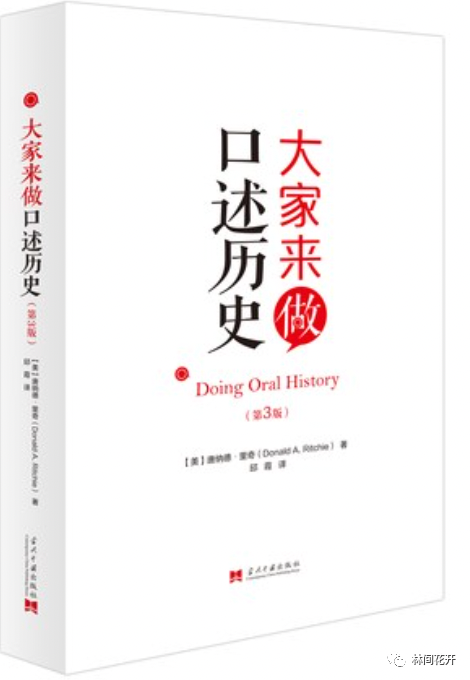
这本书是一部集口述历史理论、方法、实践于一体的百科式手册，采用一问一答的形式，结合案例来讲述。书中回答了如何成立项目、如何找到可以做口述史的人、如何做准备、如何采访等问题。具体详见：如何给老人写传记
通过阅读，了解到做口述史有两种采访框架：一种是按年代，另一种是按主题。采取哪一种方式访谈有其策略，如果侧重的是人生故事，那么按年代，也就是阳老师说的按人生周期线索采访；如果是聚焦于某一事件，就按主题采访会更好。
如何读人物传记？首推《心理传记学手册》。
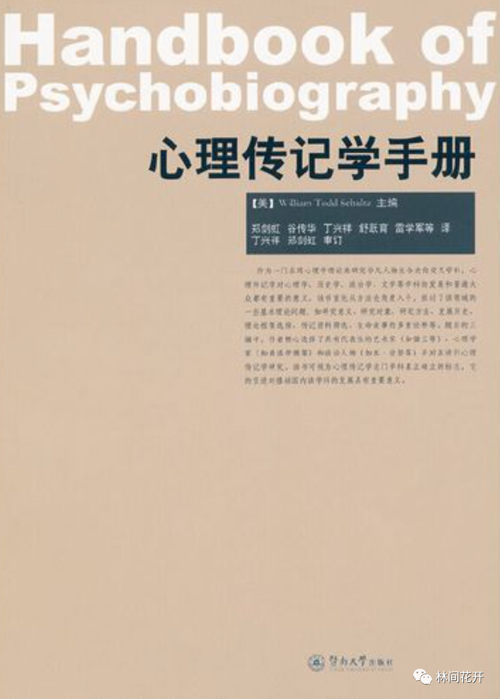
这是一本学术性书籍，阅读难度较大。采用抽样阅读法，定位出书中20%的核心章节——第一编第三章「如何从传记资料中获得心理学的发现」。这一章由本书主编舒尔茨撰写，他提出了阅读和写传记的框架——「原型情景论」，涉及五个指标：
1、清晰、具体、情感强度
2、贯通（渗透）
3、发展性危机
4、家庭冲突
5、拒绝接受现状
这个框架如同一张路线图，指引着我从大量的资料迷雾中走出来，抓取对传主更具解释力的核心事件，少走弯路。具体详见：如何阅读人物传记
要学习人性，最好的方式是阅读心理学各流派创始人的传记和作品。在人性大师课上，我读了《弗洛伊德传》。
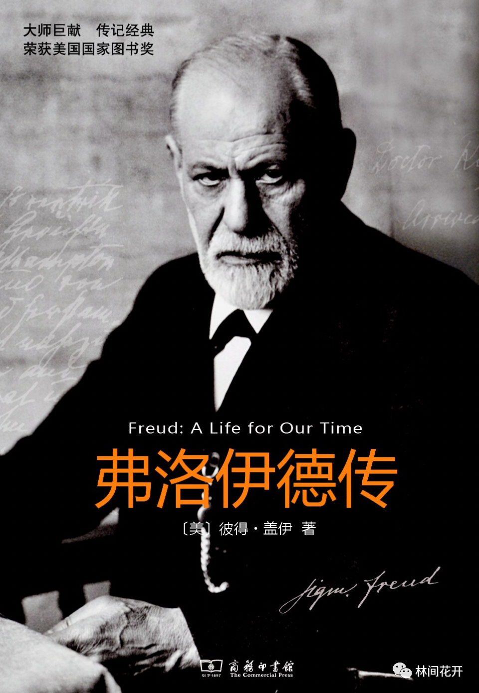
作者厄内斯特·琼斯是弗洛伊德的40多年好友，他参与了弗洛伊德的历史，也是早期精神分析圈子的核心成员。
与其他抹黑弗洛伊德形象的作品不同，琼斯还原了一个真实、客观的弗洛伊德。他表示，写这本传记的目的，并非为了使其成为畅销书，而是如实记录弗洛伊德，试图将他的人性、人生经历与思想发展联系起来。具体详见：重新认识弗洛伊德
原本以为弗洛伊德辉煌的一生是极具英雄主义或天才式的成长，但实际上，并非如此。在他临近40岁，才出版了第一部作品——《梦的解析》。
弗洛伊德之所以成为弗洛伊德，关键在于他的个性与思想达到了高度的匹配。
在阳老师的播客《高手的习惯》中，接触到经济学大师米塞斯，并阅读了他的两本传记：一本是他初到美国正处在低谷时期所写的《米塞斯回忆录》；另一本是米塞斯夫人在他去世后所写的《米塞斯夫人回忆录》。两本书一起看，更能了解米塞斯的一生，他的形象更显立体和饱满。
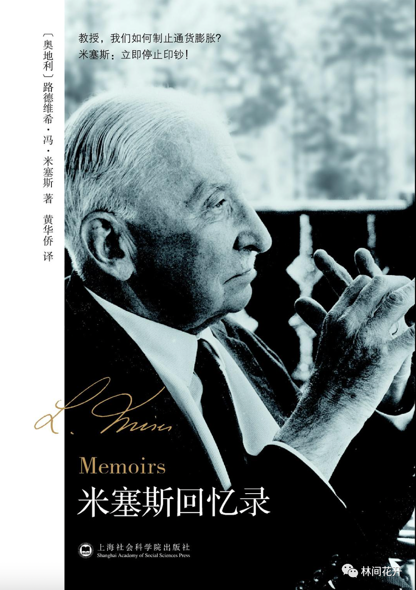
米塞斯是奥地利经济学派第三代领军人物，同时也是一位伟大的思想家和老师（创办了私人研讨会，从而获得了个人影响力）。他一生都崇尚古典自由主义，被美国《自由》杂志评为自由至上主义的世纪人物。
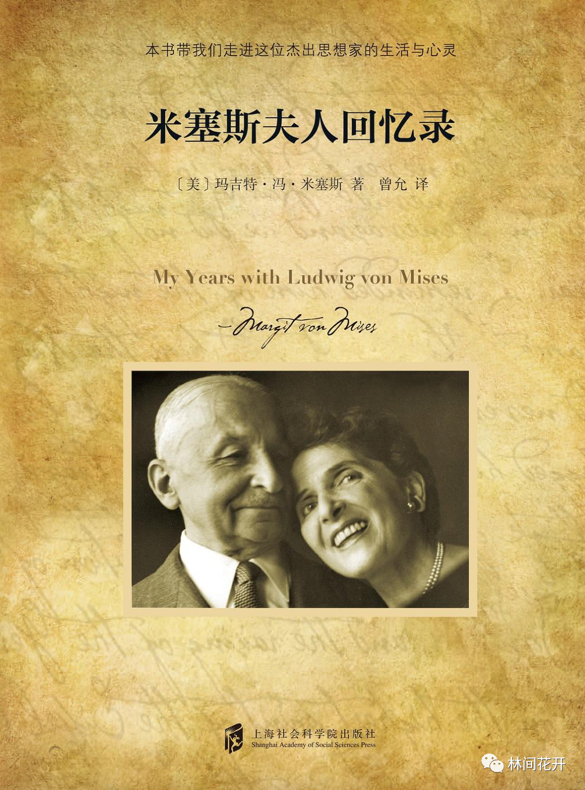
在《米塞斯夫人回忆录》中，弥补了米塞斯在自传中未提及的个人生活方面：梦想、情感、爱情、个人收入、财富、考验等。书中还详述了他从欧洲逃至美国的经历，以及他的代表作《人的行为》出版前后所经历的纠葛。
学习写作时，需要阅读作家的传记。首推科幻作家阿西莫夫的《人生舞台》，这本书揭示了他「多产」的秘密：热爱、专注以及强烈的作品意识。「多产」是阿西莫夫的一个重要目标，他希望通过作品数量让世人铭记。因此，他每天都能在打字机前不知疲倦地写作，视写作为生命。
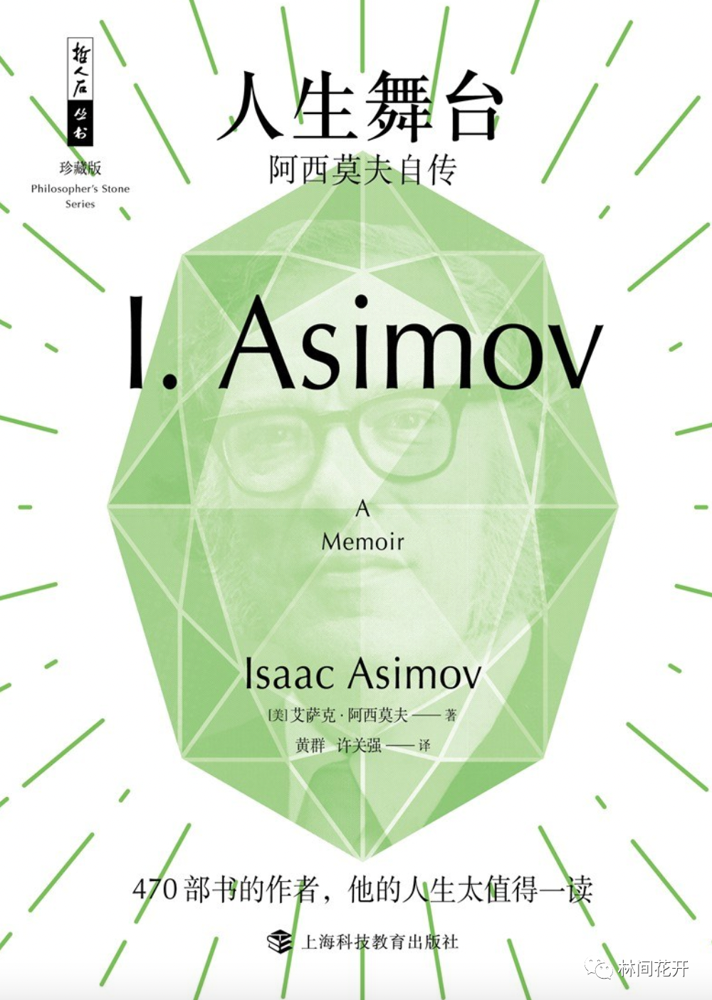
那么如何避免写作障碍呢？阿西莫夫早期也曾经历过写作瓶颈。
当他遇到难以继续写作的时候，他并不会坐在那里苦苦思索，而是将其搁置一旁，转而写其他十几种手头的作品。他会写评论、小品或非小说类书籍等，等到写作状态恢复后，他会重新投入之前搁置的书稿，重燃写作欲望。
即使离开书桌，他在做其他事情时，脑海中仍在想着写作。一旦坐下来，他会源源不断地写作，从未间断过。具体详见：多产作家阿西莫夫｜人物传记
在读过王小波的一系列作品之后，去年终于读到了他哥哥所写的《我的兄弟王小波》。在某种意义上，这是一部关于兄弟情谊的书。王小平以他的视角回顾了王小波的成长过程。读过这本书后，我才明白为什么王小波如此受到文艺青年们的追捧。
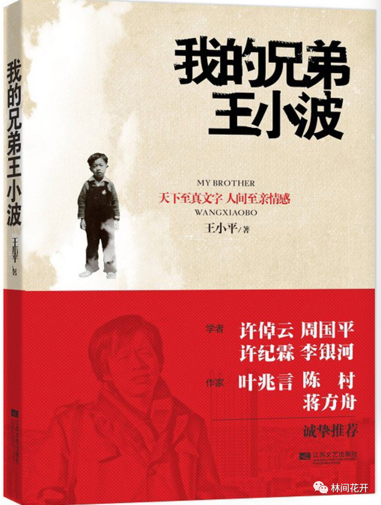
在写作课上，最经常被提及的作家莫过于张爱玲了。在此之前，我曾把张爱玲看作与琼瑶同类的言情作家。然而，在读过夏志清在《中国现代小说史》上对张爱玲的评价之后，我改变了这种看法。重读了她的《金锁记》、《红玫瑰与白玫瑰》、《倾城之恋》等，把她当成最佳典范去学习写故事。
把《张爱玲私语录》当成她的传记去阅读。
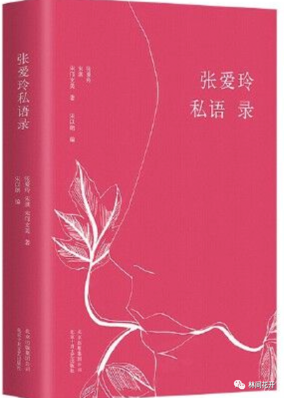
张爱玲曾说：“一个知己就好像一面镜子，反映出我们天性中最优美的部分。”这句话出自《张爱玲私语录》这本信件集，记录了她与宋淇夫妇三人之间长达一生的友谊。相识于1952年，之后张爱玲去美国定居，直到1995年她去世。
在这四十年间，三人以信件保持联系，共计600多封信、40多万字。宋淇的儿子宋以朗在他们去世多年后出版了《张爱玲私语录》，让张迷们得以一窥张爱玲在美国生活的点滴。
每年我都会反复阅读的一本传记是《富兰克林自传》。这回重读，我不再满足于仅仅阅读表面的鸡汤，而是深入挖掘富兰克林的自我身份认同，读到过往没读到的点。具体详见：富兰克林的富兰克林｜人物传记
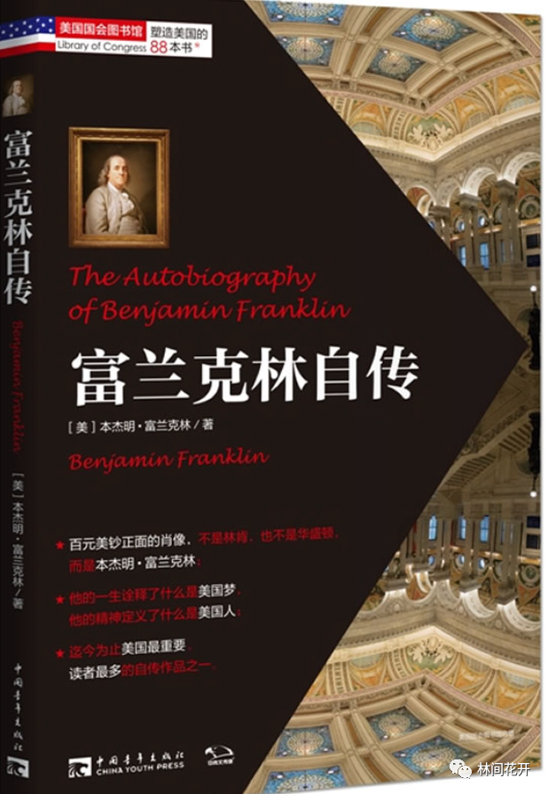
一年之内，我读了30多本传记，今年还会继续阅读。之后，我会专门撰写一篇文章来聊聊传记主题的书籍。
在开智的阅读课程中，我读了一些认知科学和社会学主题相关的书籍。
其中，我非常喜欢阅读《批判教育学第九讲》。以前从未读过这类看似枯燥的书，读完后却发现非常过瘾，于是重读了好几遍。
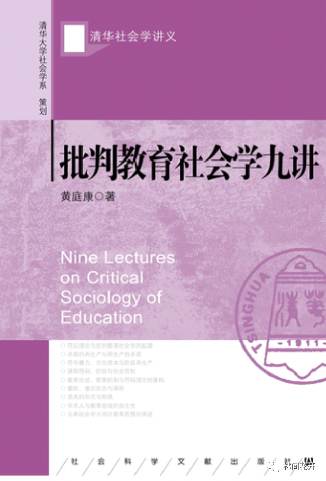
这本书是香港学者黄庭康，2013年在清华大学的研究讲稿发展而成的一本书，也是他在教育社会学领域多年研究的成果。说实话，如果不是参加了开智的「人生资本」阅读课，我估计很难读到这类书籍。这是一本颠覆了我对教育观念的好书。
根据书中引用书籍的线索，我继续阅读了法国社会学家布里厄的作品，如《关键概念》和《国家精英》等，了解了教育的真相。从而也明白了为什么现在大家如此重视学历和文凭。文化资本是一种软性暴力，非常隐蔽，也是上层建筑巩固阶层最好的方式。
尽管阅读这些书籍并不能对国家教育政策产生直接影响，但了解教育真相后，我知道在育儿方面可以做些什么，哪些做了是没有意义的。
身为父母，不可不读科学育儿书。
推荐牛津通知系列读物《儿童心理学》，逢人必推。成为父母后，我们最应该做的就是学习科学的育儿知识，掌握儿童的语言和发展规律，在育儿过程中才能少走弯路。
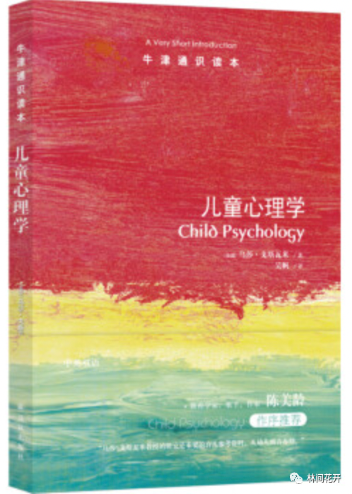
作者乌莎·戈斯瓦米是儿童发展领域的权威，在书中，她给出了育儿的三大关键：执行功能、心理理论、依恋理论。遵循这三大核心理论，你的育儿过程将事半功倍。这本小书只有一百多页，内容简单易懂，花上一两个小时就能读完。
意大利作家卡尔维诺在《为什么要读经典》一书中给出了十四个经典的定义，经典是那些重读的书。经典还是那些在青少年时代可能读不懂，但在成熟的年龄再读时能欣赏到更多细节的书。
《红楼梦》可谓是经典中的经典，每年都值得一读。今年，我开始了读《红楼梦》的计划，每周六与小伙伴一起晨读，这已经成为了我每周最期待的事情。目前已经读到第20回，争取今年能读完前80回。
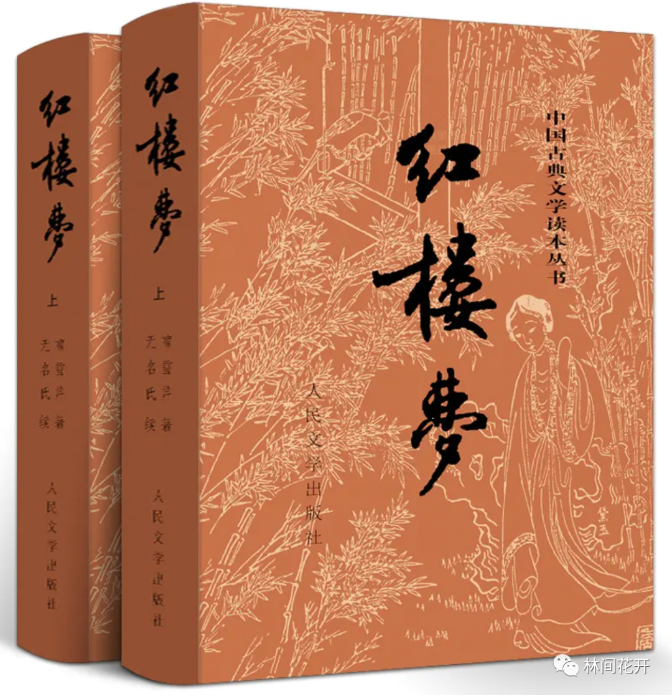
每一本书如同一颗闪亮的星星，读的书多了，就能汇聚成一个知识宇宙。
在世界读书日，做一名长期阅读者。